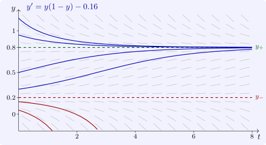
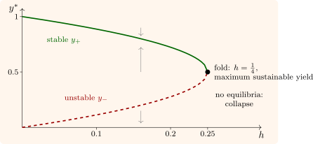

1.6 Autonomous equations and the phase line
For an autonomous scalar equation \(y' = f(y)\), the right-hand side depends only on the state. The real line of possible states, marked with the zeros of \(f\) and with arrows showing the sign of \(f\) between them, is the phase line, and it determines the qualitative behaviour of every solution.
Theorem 1.6.1. Let \(f\) be continuously differentiable on \(\mathbb R\), so that initial value problems have unique solutions (as the next section proves).
- (i)
- If \(y^*\) is a zero of \(f\), the constant \(y \equiv y^*\) is a solution, and no other solution reaches \(y^*\) in finite time.
- (ii)
- Every non-constant solution is strictly monotone, and stays between two consecutive zeros of \(f\) (or a zero and \(\pm \infty \)).
- (iii)
- A bounded solution on \([t_0, \infty )\) tends to a zero of \(f\) as \(t \to \infty \).
- (iv)
- If \(f(y^*) = 0\) and \(f'(y^*) < 0\), solutions starting near \(y^*\) tend to \(y^*\): the equilibrium is asymptotically stable. If \(f'(y^*) > 0\), solutions starting near \(y^*\) but not at it move away: it is unstable.
Proof. (i) The constant satisfies the equation. If another solution \(y\) had \(y(t_1) = y^*\), then \(y\) and the constant would both solve the IVP with data \((t_1, y^*)\), contradicting uniqueness.
(ii) By (i) a non-constant solution never takes the value of a zero of \(f\), so by continuity it stays in one interval between consecutive zeros, on which \(f\) has a constant sign; then \(y' = f(y)\) has that sign.
(iii) A bounded monotone function has a limit \(L\). If \(f(L) \neq 0\), then \(y'(t) = f(y(t)) \to f(L)\), and for large \(t\), \(|y'| > |f(L)|/2\), so \(y\) would change without bound, a contradiction.
(iv) If \(f'(y^*) < 0\), then \(f > 0\) just below \(y^*\) and \(f < 0\) just above it. A solution starting in such a neighbourhood moves towards \(y^*\), stays bounded, cannot cross \(y^*\) by (i), and so tends to a zero of \(f\) by (iii), which must be \(y^*\), the only zero nearby. The unstable case is the same with the signs reversed. □
The stability test is a first instance of linearisation: near \(y^*\), \(y' = f(y) \approx f'(y^*)(y - y^*)\), and the deviation grows or decays like \(e^{f'(y^*)t}\). When \(f'(y^*) = 0\) the test is inconclusive, and higher-order terms decide; \(y' = y^2\) has a semi-stable equilibrium at \(0\), attracting from below and repelling above.
Example 1.6.2. A fishery with logistic growth and a constant harvest satisfies, in units where \(r = K = 1\), \(y' = f(y) = y(1 - y) - h\). The equilibria are \[ y_\pm = \tfrac 12\bigl (1 \pm \sqrt {1 - 4h}\bigr ), \qquad 0 \leq h < \tfrac 14 , \] with \(f'(y) = 1 - 2y\), so \(f'(y_+) = -\sqrt {1 - 4h} < 0\) and \(f'(y_-) = \sqrt {1 - 4h} > 0\): the upper equilibrium is stable and the lower one unstable. A stock above \(y_-\) recovers towards \(y_+\); a stock below \(y_-\) collapses to zero in finite time. As the harvest rises, the two equilibria approach each other, and at \(h = \frac 14\) they merge at \(y = \frac 12\) and disappear: for \(h > \frac 14\), \(f < 0\) everywhere and every stock is fished to extinction. The maximum sustainable yield is \(h = \frac 14\), and it is the edge of a cliff. This qualitative change as a parameter crosses a critical value is a saddle-node bifurcation (Figure 2), the subject of the section on bifurcations.


Questions on this section
Stuck on something here? Ask below and it stays attached to this topic.